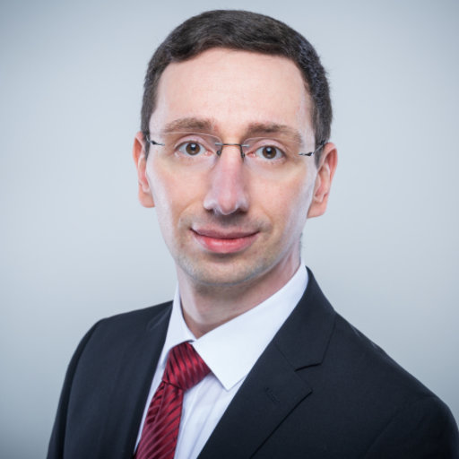

Core team
Xudong Zhang, Ph.D.
Musculoskeletal biomechanics and health through integrative modeling and design of human-machine systems.
Contributors & labs
The catalog exists because these researchers and labs published their data, methods, and tools. Listed here are the corresponding authors behind the datasets, models, and tools in the index, with the group behind each record.

Ryan Casey
Corresponding author of the Second Skin wearable-sensing dataset.

Nikhil Divekar, Ph.D.
Co-corresponding author of the knee-exoskeleton lifting dataset.

Robert Gregg, Ph.D.
Directs the Locomotor Control Systems Lab; co-corresponding author of the knee-exoskeleton lifting dataset.

Ping Guo, Ph.D.
Co-corresponding author of the manufacturing fatigue dataset.

Sunwook Kim, Ph.D.
Corresponding author of the EksoVest automotive assembly field-study dataset.


Pauline Maurice, Ph.D.
Corresponding author of the AnDy ergonomics and AnDy exoskeleton datasets.
Dominik Mayer
Corresponding author of the Apogee lifting-speeds dataset.


Maury A. Nussbaum, Ph.D.
Co-directs the Occupational Ergonomics and Biomechanics Labs; senior author of the EksoVest automotive assembly dataset.

Xi Peng, Ph.D.
Leads the DeepREAL Lab; senior author of the KinematicNet and roofing pose-estimation models.

Mattia Pesenti
Corresponding author of the exoskeleton payload IMU dataset — bioengineering, EMG, exoskeletons, control theory and AI.

Robert G. Radwin, Ph.D.
Author of the frequency- and hand-speed-duty-cycle HAL equations; developer of the MVTA video task analysis system and the computer-vision HAL and lifting monitors behind KineVid.

Mohamed Irfan Refai, Ph.D.
Corresponding author of the passive back-support benchmark dataset.

Benjamin Reimeir
Corresponding author of the back-exoskeleton mechanisms dataset.

Matthias Wolf, Dr.techn.
Corresponding author of the Paexo Back logistics dataset.


Aaron J. Young, Ph.D.
Directs the EPIC Lab — wearable robotics, exoskeletons and prosthetics; senior author of the Second Skin dataset.

Qi Zhu, Ph.D.
Co-corresponding author of the manufacturing fatigue dataset.
NIOSH
Source of four public-domain studies in the catalog: patient handling, bed-to-chair transfer, roofing hip kinematics, and roofing knee intervention.
Every record in the catalog credits the lab that produced the data, and every improvement to the catalog itself is visible in the open on GitHub. If your group works on occupational biomechanics — datasets, models, tools, or exoskeleton evaluation — see how to contribute; we would like the community listed here to grow.
Affiliations & organizations
The institutions the core team and the contributing researchers work at — every group whose data or maintenance the catalog builds on.


Global reach
Where the catalog comes from: the institutions and labs contributing datasets and maintenance, weighted by the number of records each group is behind.
Locations of contributing institutions, sized by number of catalog records. Not visitor tracking — this site collects no analytics.